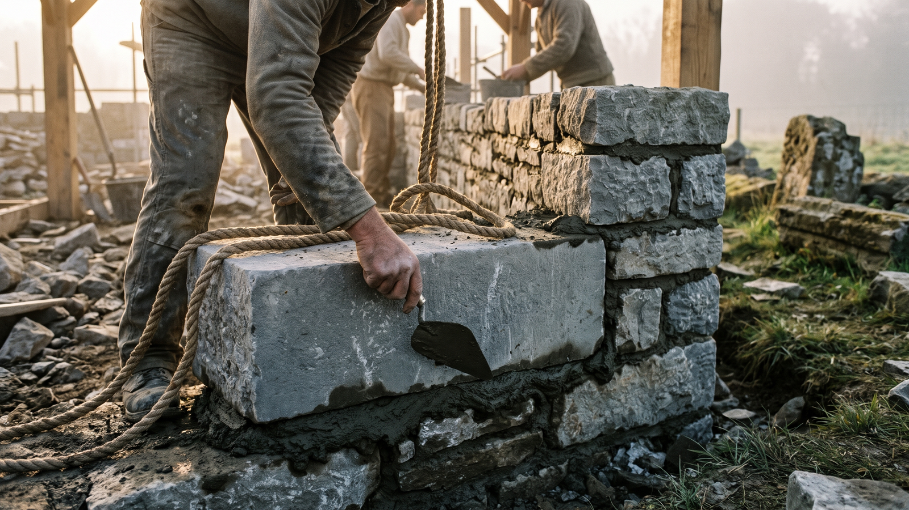

One year, and the older version closed
ShadowSecurity was a non-profit organisation the author founded to create security tools and software to help individuals and organisations protect themselves against cyber threats. It shut down after about a year, by the author's own account because his ambition outran the hours: too many projects to manage at once. The README is careful about one point, and this page repeats it exactly: only the older version was shut down, and this new, better version will live on.
Shadow-Linux, the idea the stone was laid for
The founding idea, and the one thing kept. Shadow-Linux brings the author's favourite penetration testing GNU/Linux distributions together inside one operating system built on Bedrock Linux: in the README's words, essentially one giant regex script that installs them into a single system, carrying no branding of its own, because the plan was to install Bedrock and make the changes directly rather than fork the project.
Held honestly, the way the repo holds it: Shadow-Linux.sh is a placeholder today, a script not yet written, and Shadow-Mac.sh is the same. The original organisation code could not be restored after deletion, and the note taped inside the README says so plainly. The stone is real; the building above it is still a plan.
Each project, and its true ending
Shadow-Live, a customisable penetration testing distribution with backups, set aside because it changed too little from RescueZilla, the distribution it forked.
Shadow-Windows and Shadow-Mac, both stopped over the copyright issues a custom system would raise. Shadow-Mac may reopen one day as a script rather than an OS: a Mac set up with the best penetration testing tools and a configured out of box experience.
Shadow-Website, whose code is lost; screenshots, and video of the progressive web app in action, are kept and provided in this project's releases.
Shadow-Music, a fork of a SomaFM online player; its code is lost too, and its videos are likewise kept as releases.
And the community projects closed for lack of time: Shadow-Game, Shadow-Blog, Shadow-News, Shadow-Community and Shadow-Storage.
KidsWhoHack
The author also founded KidsWhoHack, to teach cybersecurity to kids. He created a course for it, then decided the course was reinventing the wheel: text based content is just as effective for learning, if not more. So he shifted to presentations and blogs, easier to manage and open to a wider audience, and eventually closed the organisation. Its legacy lives on in the text based content he continues to create, the way ivy keeps a wall's shape after the wall is gone.
The door that deletion closed
An attempt was made to restore the original organisation code, and the README tells it straight, links kept: GitHub on restoring a deleted repository, Stack Overflow on restoring a deleted organisation, and the GitHub changelog note on restoring deleted repositories. Because the organisation itself was deleted, the restore menu could not be reached at all, and that closed the door. What survives is what was carried out by hand: this repo, its images, and the releases.

What the author says he learned
Ambition spread across too many projects is what ended them. He had, in his own words, tried to reinvent the wheel and do too much, when the main focus should have stayed on the flagship script. The lesson he carries forward is written in the README's conclusion: focusing on one core product is the key to success in any project, and the organisations will live on in other forms. The stone stays where it was laid.